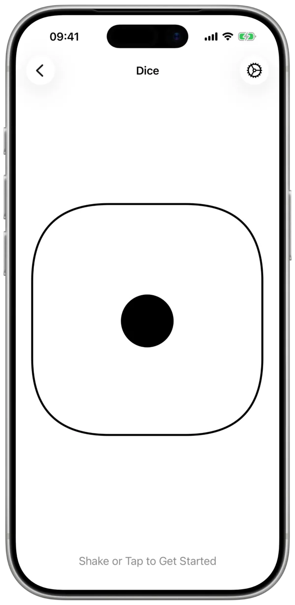
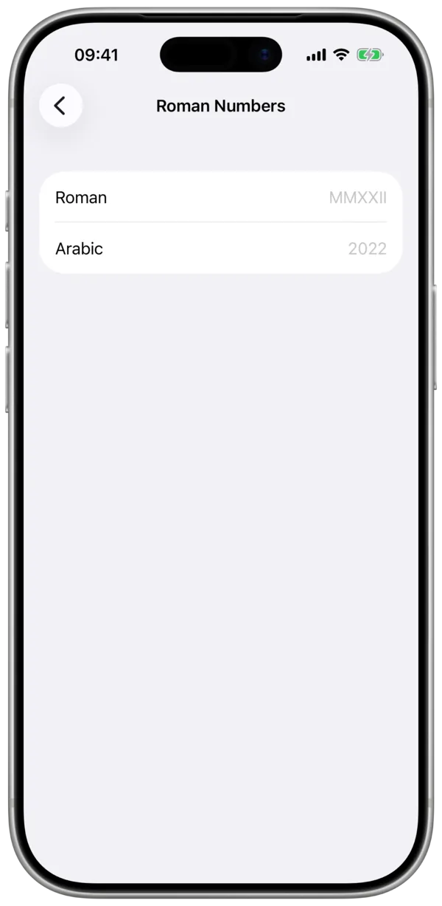
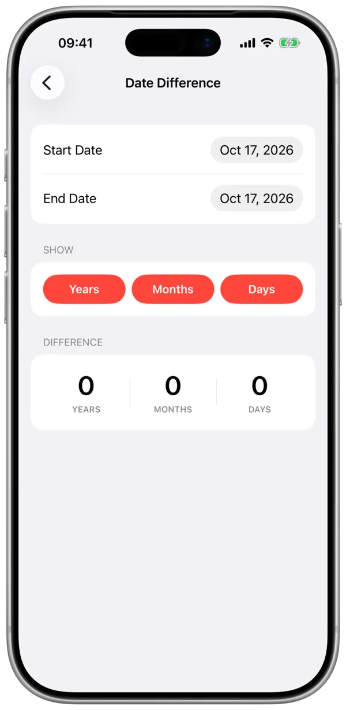

Toolbox
One app – all you need.
Toolbox helps with the little tasks you want to do with your phone but don't have an app for. It combines lots of tools, so you only need one app. Toolbox is free and open source and runs on iPhone, iPad and Apple Watch.




What's inside
Every tool does one thing and does it well. Hide the ones you don't need and put your favorites at the top. Dice, Counter and Random Number are on the Apple Watch too.
-
Dice
Roll dice with 6, 10 or 20 sides and lock the ones you want to keep.
-
Domain Resolver
Look up the IP addresses behind a domain name.
-
Random Number
Draw a random number from any range you like.
-
Random Letter
Pick a random letter, for word games and decisions.
-
Live Clock
A big, exact clock with seconds, always running.
-
Date Difference
Count the days, months or years between two dates.
-
Roman Numbers
Convert between Roman numerals and regular numbers, both ways.
-
Counter
Tap to count people, laps or anything else.
-
QR-Code Generator
Turn links and text into a QR code and share it.
-
Color Picker
Pick a color and copy its values for your next project.
-
BMI
Work out your body mass index from height and weight.
-
IP-Checker
See your public IP address at a glance.
-
LAN Scanner
Find the devices in your Wi-Fi network.
-
Ping
Check whether a server answers, and how fast.
-
Coordinates
Your GPS position in decimal degrees or DMS, ready to copy.
-
Speed
How fast you are moving right now, measured by GPS.
-
Barcode Scanner
Scan barcodes and QR codes and keep a history of them.
Got an idea?
If you have an idea for a new tool, let me know at toolbox@sivery.de. Want to be notified about new versions? Subscribe to the newsletter.
You can also help build Toolbox yourself – with translations, icons or whole new tools. Here's how.
Release Notes
Version 1.3
- Added Barcode Scanner
- Dice now has the option for 10 or 20 sides
- Dice can now be locked into place
- Added LAN Scanner
- Added Random Letter generator
- Coordinates can now be displayed in DMS
- Coordinates can be copied as one string
Version 1.2
- Reorder functions the way you like it
- Added Ping function
- Added Coordinates function
- Added Speed function
- Added watchOS support
- Toolbox has gone completely open source
Version 1.1.1
- Fixed BMI crash
Version 1.1
- More options with the dice
- New interface for the random number generator
- New accent color
- New function: IP-Scanner
- Display options for "Date Difference"
- Copy indicator for more actions
Version 1.0.1
- Problem fixed with ShareSheet on iPadOS
- Problem fixed with AppIcon picker
- Buttons in Info-Menu now have a bigger hitbox
Version 1.0
First release! Functions:
- Dice
- Domain Resolver
- Random Number
- Live Clock
- Date Difference
- Roman Numbers
- Counter
- QR-Code-Generator
- Color Picker
- BMI
Support me
If you want to support the development of Toolbox, and me, consider buying me a coffee. Thank you 🫶
The App Store and Apple logo are trademarks of Apple Inc.